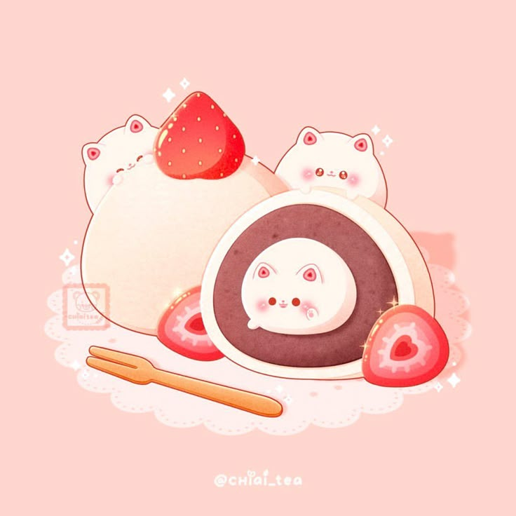

Mochi Daifuku Cokelat
Rasa manis cokelat yang membuat harimu bahagia
Rp20.000
UMKM Pekalongan
Mochi dengan tekstur yang lembut dan chewy

Mochi Daifuku adalah usaha UMKM yang menyediakan mochi dengan tekstur lembut dan chewy serta berbagai pilihan rasa yang cocok untuk dinikmati sebagai camilan.
Usaha ini hadir untuk memberikan camilan yang lezat, terjangkau, dan dibuat dengan memperhatikan kualitas bahan serta rasa. Mochi Daifuku cocok dinikmati bersama keluarga, teman, maupun sebagai camilan sehari-hari.
Kami berkomitmen untuk memberikan produk yang berkualitas dengan pelayanan yang ramah kepada setiap pelanggan.
Rasa manis cokelat yang membuat harimu bahagia
Rp20.000
Rasa manis cokelat dan strawberry yang membuat harimu penuh dengan cinta
Rp25.000
Rasa manis vanilla dan rasa fruity mango mwmbuat harimu lebih cerah
Rp25.000
Rasa calming matcha yang bikin nagih
Rp25.000
Lokasi: CFD alun-alun kajen, Pekalongan, Jawa Tengah
Jam layanan: Sabtu - Minggu, 09.00 - 11.00 WIB
WhatsApp: Hubungi Mochi Daifuku melalui WhatsApp